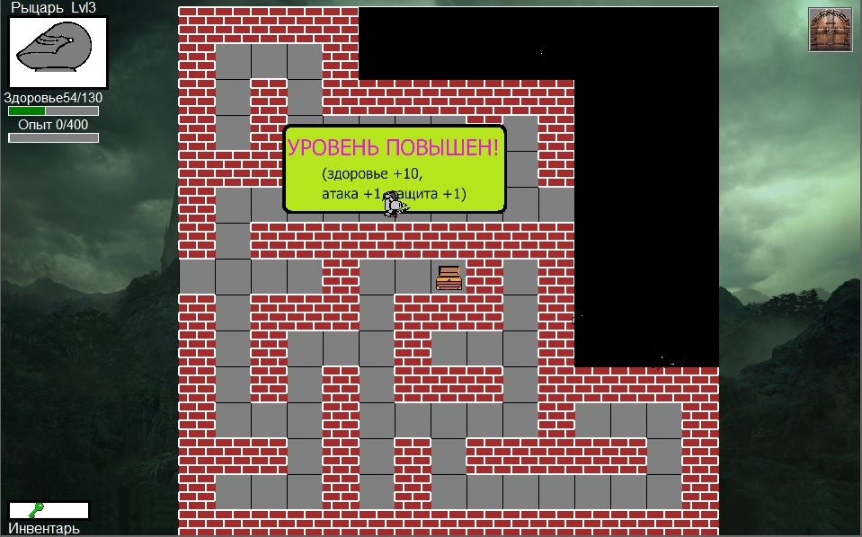
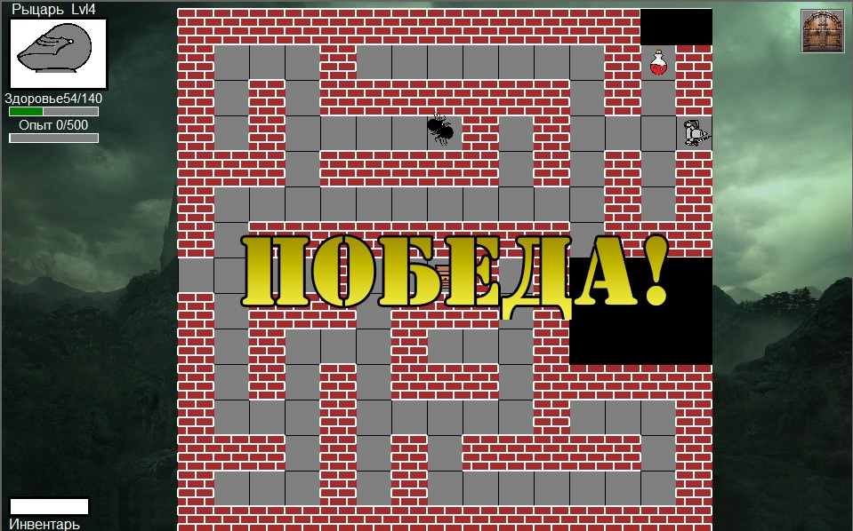

В левом верхнем углу экрана размещен портрет персонажа,
а также полоски, показывающие текущий уровень здоровья и количество заработанных очков опыта.
В нижнем левом углу- окно инвентаря, где отображаются найденные предметы, например, ключи.
Когда игрок сталкивается в лабиринте с врагом, тот замечает персонажа и начинает движение в его сторону.
Игрок может попытаться убежать либо сразиться. Если враг оказывается достаточно близко- начинается битва.
Игрок и враг наносят друг другу удары.
В левом верхнем углу экрана размещен портрет персонажа,
а также полоски, показывающие текущий уровень здоровья и количество заработанных очков опыта.
В нижнем левом углу- окно инвентаря, где отображаются найденные предметы, например, ключи.
Когда игрок сталкивается в лабиринте с врагом, тот замечает персонажа и начинает движение в его сторону.
Игрок может попытаться убежать либо сразиться. Если враг оказывается достаточно близко- начинается битва.
Игрок и враг наносят друг другу удары.  Выиграв битву, игрок зарабатывает очки опыта. Когда количество очков опыта достигает необходимого предела- происходит повышение уровня, при котором повышаются характеристики персонажа. Таким образом, реализована прокачка. С каждым новым уровнем, количество очков опыта, необходимое для достижения следующего уровня возрастает
 Если игрок сумел найти выход, а также соответствующий ключ, то ему засчитывается победа. В ходе игры можно найти спрятанное за запертой дверью сокровище, а также набрать несколько уровней. Если же персонажа игрока убивают враги, то игра проиграна.
 Black-Jack. Карточная игра по традиционным правилам с зарабатыванием денег и топ-листом.
Black-Jack. Карточная игра по традиционным правилам с зарабатыванием денег и топ-листом. Sea Battle. Морской бой. Игра из детства на поле размером 10 на 10 клеток против компьютерного оппонента.
Sea Battle. Морской бой. Игра из детства на поле размером 10 на 10 клеток против компьютерного оппонента. Викторина с разными темами и случайной комбинацией вопросов и подсчетом очков в финале
Викторина с разными темами и случайной комбинацией вопросов и подсчетом очков в финале